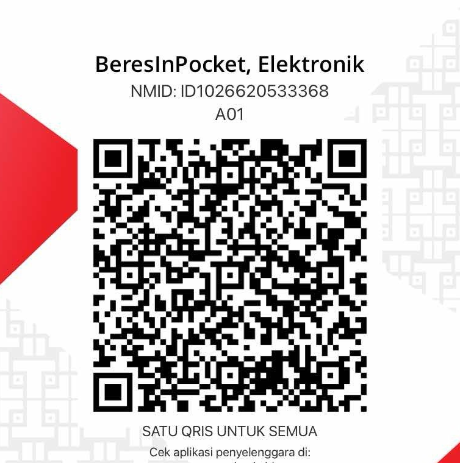

Riset & rangkuman
Menelusuri bahan, mengurai informasi, dan menyusun gambaran awal untuk ditinjau.
BATCH PERDANA RESMI DIBUKA
Bukan tambah aplikasi.
Cara cerdas menuntaskan riset, dokumen, dan agenda dalam satu saku.
Kenalkan BeresInPocket: 10 pekerja virtual melalui satu chat Telegram. Siap membantu segala urusan mulai dari kebutuhan pribadi hingga manajemen organisasi.
✓ Pembayaran aman via QRIS nasional • Garansi aktivasi akun Telegram
Riset → Draf dokumen → Tinjauanmu
Ilustrasi konsep, bukan percakapan nyata atau demo produk.
Lebih sedikit pindah konteks.
Lebih banyak ruang untuk hal penting.
Sepuluh pekerja virtual adalah arah konsep kami: beragam peran yang dihubungkan lewat satu percakapan. Bukan sepuluh aplikasi yang perlu kamu urus.
Menelusuri bahan, mengurai informasi, dan menyusun gambaran awal untuk ditinjau.
Merapikan catatan menjadi kerangka, draf proposal, atau bahan presentasi.
Mengembangkan sudut pandang, draf tulisan, dan rencana konten dari arahanmu.
Membantu menata prioritas, rencana kegiatan, dan daftar tindak lanjut.
Bidang di atas menggambarkan arah pengembangan, bukan daftar fitur yang sudah tersedia.
02 / UNTUK KESEHARIAN YANG BERAGAM
Kebutuhannya berbeda. Idenya sama: tempat yang lebih sederhana untuk meminta bantuan.
Dari bahan belajar dan proyek pribadi hingga ide konten serta agenda harian. Mulai dari hal yang sedang kamu kerjakan.
Dari catatan rapat dan bahan proposal hingga rencana kegiatan komunitas, tim, atau organisasi.
03 / SEBELUM MELANGKAH
Pemesanan Batch Perdana sudah dibuka! Anda dapat memilih paket dan melakukan pembayaran melalui QRIS resmi BeresInPocket. Akses bot akan diaktivasi ke akun Telegram Anda setelah verifikasi mutasi selesai.
Konsepnya adalah satu tempat untuk menyampaikan kebutuhan, memberi konteks, dan meninjau hasil. Telegram direncanakan sebagai pintu percakapan tersebut.
Ini adalah konsep sepuluh peran bantuan virtual, bukan sepuluh staf manusia. Pembagian peran dan kemampuan akhirnya masih dikembangkan.
Paket Pribadi: Rp 39.000 / bulan (tepat 1 pengguna Telegram). Paket Organisasi: Rp 89.000 / bulan (hingga 5 akun pengurus inti). Pembayaran menggunakan QRIS resmi berstandar nasional.
Formulir penawaran menyimpan nama panggilan, username Telegram, jenis kebutuhan, dan jumlah pengguna untuk ditinjau admin. Tidak ada unggahan berkas atau pembayaran di halaman ini. Jangan sertakan dokumen rahasia. Permintaan penghapusan data dapat diajukan melalui akun Instagram resmi dengan menyebut nomor permintaan.
Pilih paket yang sesuai, selesaikan pembayaran via QRIS resmi BeresInPocket, dan dapatkan aktivasi bot langsung di akun Telegram Anda.
Cocok untuk mahasiswa akhir, akademisi, profesional, dan kreator mandiri.
Dirancang untuk BPH UKM, Himpunan, BEM, kepanitiaan, dan komunitas.

Sudah berhasil memindai QRIS dan transfer dari aplikasi bank/e-wallet Anda?
Tim finance kami sedang mencocokkan mutasi nominal QRIS Anda. Akses bot BeresInPocket akan segera diaktivasi ke Telegram setelah verifikasi selesai.
MASIH DISIAPKAN. BOLEH KENALAN DULU.
Kabar pengembangan dan pengumuman
akan dibagikan di Instagram resmi.